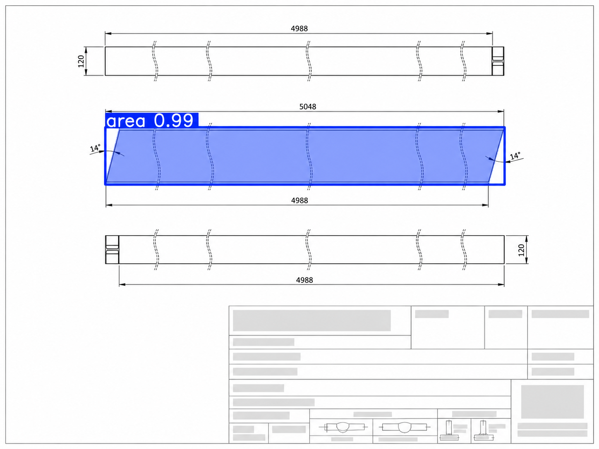
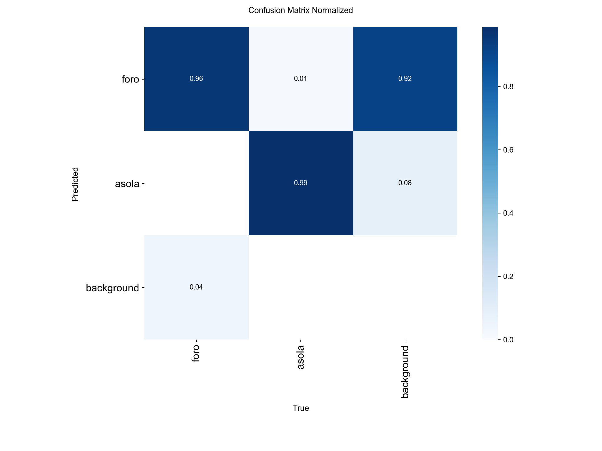
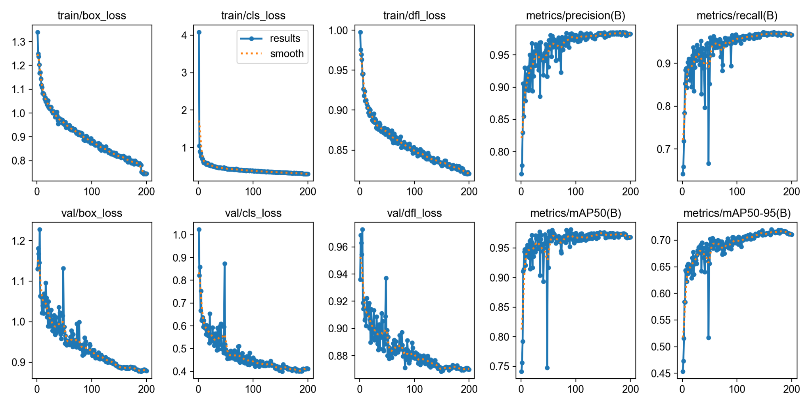

02 / COMPUTER VISION / INDUSTRY
Object Detection in Industrial Technical Drawings
A YOLO-based computer vision project for turning technical drawings into machine-readable production information by detecting holes, slots, and inclined cuts.
Overview
Industrial technical drawings contain a large amount of production-relevant information, but extracting that information manually is repetitive, time-consuming, and difficult to scale. In this project, I used a YOLO-based object detection workflow to automatically identify key geometric elements directly from drawings.
The goal was to detect holes and slots , and also support the interpretation of an inclined cut configuration. The final objective was not just model accuracy, but producing structured information that could be useful in downstream industrial workflows.
The YOLO training process was carried out on an NVIDIA GeForce RTX 5070 Ti GPU , providing the compute required for iterative model training and evaluation.
The problem
Technical drawings are rich in symbolic and geometric information, but the same richness also makes them difficult to process automatically. In a production setting, operators often need to inspect drawings repeatedly to identify specific features that affect cutting, drilling, and subsequent manufacturing decisions.
I framed this challenge as a computer vision problem: instead of reading the drawing manually, the model learns to recognize visual patterns corresponding to relevant manufacturing features.
What the model detects
- Holes in the drawing, localized through object detection bounding boxes.
- Slots (asole), also detected directly from the technical representation.
- Inclined cuts , interpreted from the visual geometry of the drawing.
- Feature positions that can be translated into structured information for downstream use.
Detection examples
The examples below show anonymized drawing excerpts used to illustrate how the model identifies relevant geometric elements. Any confidential metadata, title blocks, client references, or internal codes have been intentionally removed or obscured.


Training and evaluation
I evaluated the model both qualitatively, through detection examples on drawings, and quantitatively, through training metrics and a normalized confusion matrix. This helped verify that the detector was learning the right classes while maintaining strong precision and recall. In particular, the training process was performed on a NVIDIA GeForce RTX 5070 Ti .


Impact on the workflow
Reduced manual interpretation
Instead of visually checking each drawing element by hand, the detector provides an automatic first pass over the features that matter most.
Structured geometric extraction
The output can be converted into structured information, making technical drawings easier to integrate into downstream digital workflows.
Industrial relevance over pure accuracy
The project focused on practical usefulness: identifying the information that helps real production decisions rather than optimizing for a benchmark in isolation.
This project was especially valuable because it showed how computer vision can bridge the gap between visual technical documents and production-oriented decision making.